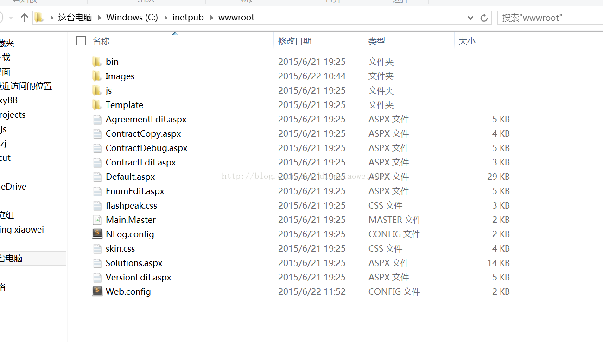
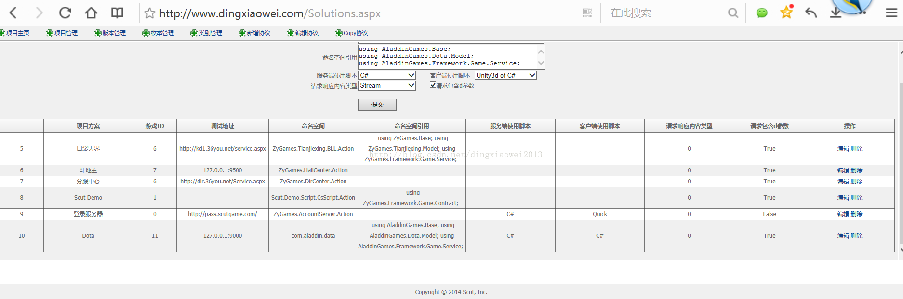
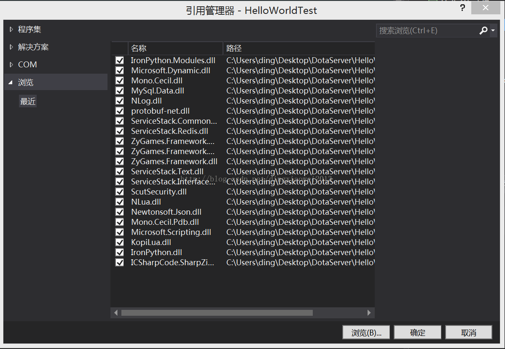
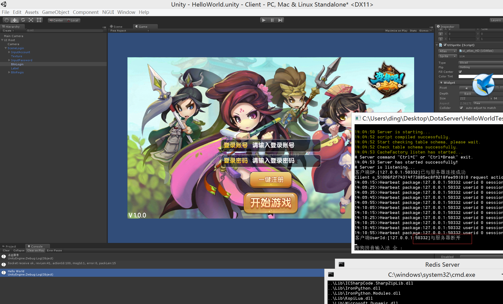

前序：又是好久没动手写写博客了，意味着好久没有自己研究一些新东西了，每天回来都比较晚，可能也比较累，都懒的打开电脑了，最近公司给所有的程序都配置了一台surface，欣喜若狂，轻便小巧，利用三天假期的时间终于可以好好利用一番，偶然的机会看到scut开原游戏服务器(一款基于.net framework4.5.1)，便有一种意见钟情的感觉，于是便决定好好研究一番！
一、Scut特点
一款免费开源的游戏服务器引擎，适用于开发AVG、SLGRPG、MMOG等类型的网络游戏，同时支持Http、WebSocket和Socket协议通讯，支持Window、Mac和Linux多种平台部署，支持Redis内存数据库和Microsoft SQL、MySql数据库；服务器引擎框架基于C#编写，游戏逻辑层可以选择使用C#、Python和Lua多种脚本进行开发，支持热更新的方式部署；客户端可以使用Coscos2d、Unity3d、FlashAir与服务器引擎对接；提供了丰富的中间件，可以简单快捷的搭建您的游戏。
多协议：支持Http / WebSocket / Socket
脚本化：支持C# / Python / Lua脚本开发
多平台：Windows / Linux / Mac平台
多数据库：MSSQL、Mysql及NoSql
兼容多平台、也支持cocos2dx，unity3d，falsh等主流的游戏开发引擎，支持逻辑层脚本语言开发，而且还支持热更新方式部署，是一款非常值得好好研究的.NET开原服务器引擎，作为.NET开发爱好者，有啥理由不喜爱上她呢？！
二、操作步骤
1.安装IIS，Win8上安装跟Win7上稍有区别，Win7上是中文Internet信息服务，Win8上直接叫英文了，要注意一下，具体安装步骤可以参考Win8 IIS安装 ,安装之后再浏览器里面输入localhost能出现默认的IIS页面则说明安装成功！
2.对上面一条的补充，设置应用程序池->DefaultAppPool->v4.0经典,确保IIS可以正常启动。
3.将Scut源码中Scut->Source->Tools->release拷贝到IIS C盘IIS目录C:\inetpub\wwwroot下

4.修改本地默认域名解析，C:\Windows\System32\drivers\etc\hosts修改ip对应的默认域名，127.0.0.1 www.dingxiaowei.com ，这样在浏览器里面输入这个域名就能解析到本地的127.0.0.1
效果如下
5.安装mysql和navicat for mysql，scut支持mssql和mysql，这里我演示的是musql，具体安装自行搜索
6.导入scut数据到本地mysql，导入数据表文件C:\Users\ding\Desktop\study\Work\ASP.NET\Scut\Source\Tools\ContractTools\db\mysql
7.再次刷新网页www.dingxiaowei.com ，会发现出现如图4的协议管理工具
8.在管理工具上点击新建项目，添加协议，添加版本号等等

9.打开vs，新建一个类库，然后将C:\Users\ding\Desktop\study\Work\ASP.NET\Scut\Release\6.7.9.8\Console这里面的工程都拷贝到你新建的工程中，前提要运行一下install.
bat生成一些必要的dll类库文件。
10.将Script文件夹和NLog.config、GameServer.exe.config文件包含在项目中，并且添加引用

11.查看一下Script/CsScript/Action/Action1000.cs文件的命名空间和引用空间，并修改对应的协议网站上的命名空间和引用
12.查看网站上自己添加的协议号并且在工程Script/CsScript/Action目录添加上对应协议号的类，然后将网站上的脚本拷贝过来,我这边是Action100.cs
13.在原来的Action1000.cs添加如下代码
public override bool GetUrlElement()
{
if (httpGet.GetString(“UserName”, ref UserName)
&& httpGet.GetInt(“Score”, ref Score))
{
return true;
}
return false;
}
public override bool TakeAction()
{
var cache = new ShareCacheStruct
var ranking = cache.Find(m => m.UserName == UserName);
if (ranking == null)
{
var user = new GameUser() { UserId = (int)cache.GetNextNo(), NickName = UserName};
new PersonalCacheStruct
ranking = new UserRanking();
ranking.UserID = user.UserId;
ranking.UserName = UserName;
ranking.Score = Score;
cache.Add(ranking);
}
else
{
ranking.UserName = UserName;
ranking.Score = Score;
}
return true;
}
14.服务器设置为.NET Framework4.5.1,调试选择当前目录下的GameServer,并且工作目录页选择当前目录C:\Users\ding\Desktop\DotaServer\HelloWorldTest\HelloWorldTest\
15.启动RedisServer,然后启动服务器端,直到显示Server has started successfully！Server is listening…表明连接成功
启动redis
启动游戏服务器
16.服务器端就算OK,接下来是客户端，新建一个unity客户端，然后将scut的服务器端sdk拷贝过来，路径是：C:\Users\ding\Desktop\study\Work\ASP.NET\Scut\SDK\Unity3d\Assets，将里面所有的脚本都放在unity的客户端中C:\Users\ding\Desktop\study\Work\ASP.NET\Scut\SDK\Unity3d\Assets
17.测试连接和断开连接
断开连接

三、工程路径
git：https://code.csdn.net/s10141303/scut_helloworld.git
四、参考文档
https://github.com/ScutGame/Scut/wiki
http://www.cnblogs.com/lancidie/p/3412417.html
https://git.oschina.net/scutgame/Scut#git-readme